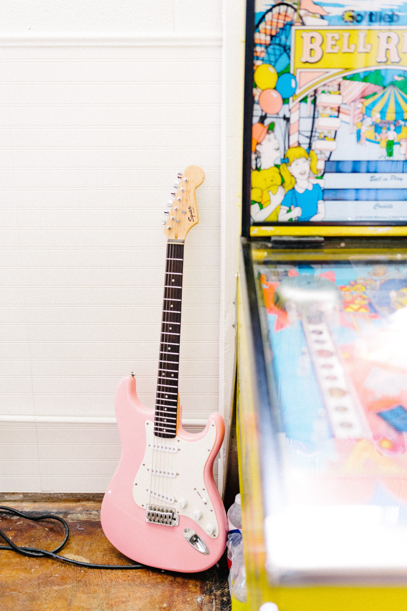

à propos
Issue d'une famille de nature plutôt artistique, mon attirance envers la création se déclare assez tôt, de nature sportive et aventurière, mon inspiration prend racine dans les voyages et les découvertes, le dépassement de soi..
Aprés avoir pris mes marques et fait mes premiers pas dans le monde du travail dans le domaine des télécoms, j'apprends ce qu'il faut apprendre pour réussir les missions que l'on me confie. Je prends mon envol au bout de 4 années auprès d'une équipe soudée et dynamique pour vivre de ma passion, le design. Je crée mon entreprise de rénovation et décoration d'intérieur et me perfectionne dans le domaine de la 3D en suivant une formation enrichissante, c'est au bout de 5 années de travaux physiques et intenses que je pose mes pinceaux et mes couteaux pour intégrer une institution marseillaise du logement sociale, je découvre le management, une équipe avec qui je créée des liens forts et respectables, mon envie de changer les choses ne suffit pas et les travers politico-socio-économique rattrapent mes idées utopistes. Seulement j'y découvre une passerelle en participant à la réalisation d'une application web.
Je demande à redécouvrir le monde de la création et de l'évasion ou seule l'imagination est un frein, en suivant une formation de développement web et web mobile, j'apprends à concevoir des applications statiques et dynamiques, des langages de programmation, voyageant entre le front-end et le back-end. J'apprends que tout est possible, un métier passionant.